import numpy as np
import matplotlib.pyplot as plt
import sklearn as sk
import pandas as pd05-Nicht Überwachtes Lernen
1 Strategien beim nicht überwachten Lernen
Beim nicht überwachten Lernen ist das Ziel Muster, Strukturen oder Zusammenhänge in unbeschrifteten Daten erkennen. Hierzu werden verschiedene Statistische Methoden verwendet. Im Allgemeinen gibt es zwei grobe Hauptrichtungen:
- Dimensionsreduktion
- Clustering
1.1 Dimensionsreduktion
Bei der Dimensionsreduktion werden Datensätzen unter Erhalt wesentlicher Informationen vereinfacht. Dies kann hilfreich sein, um Hauptunterscheidungsmerkmale zu definieren oder die Komplexität eines folgenden neuronalen Netzes zu reduzieren.
1.2 Clustering
Beim Clustering werden Datenpunkte basierend auf Ähnlichkeiten in Gruppen zusammengefasst. Daten in einer Gruppe können dann beispielsweise einer Kategorie zugeordnet werden.
2 Dimensionsreduktion
Dimensionsreduktion wird benötigt, um komplexe, hochdimensionale Daten verständlich, effizient und modellierbar zu machen.
Weniger Dimensionen bedeuten:
- einfachere Möglichkeiten
- Fokus auf relevante Strukturen
- weniger Rechenaufwand
- kürzere Trainingszeiten bei Machine-Learning-Modellen
- geringerer Speicherverbrauch
2.1 Principal Component Analysis
Die Hauptkomponentenanalyse (auch principal component analysis, PCA) rotiert das Koordinatensystem so, dass die Koordinaten des rotierten Systems in Richtung der Hauptachsen des Systems zeigen (Hauptachsentransformation). Zusätzlich werden die Koordinaten so verschoben, dass der Datenmittelpunkt auf dem Ursprung eines neuen Koordinatensystems zu liegen kommt. Die erste Achse des transformierten Systems in die Richtung, in der die Daten am stärksten streuen. Die zweite Achse zeigt orthogonal zur ersten Achse in Richtung der zweitgrößten Streuung, usw. (siehe auch https://de.wikipedia.org/wiki/Hauptkomponentenanalyse ). Anders ausgedrückt zeigt die erste Achse in Richtung des Ergebnisses einer linearen Regression (genauer Deming-Regression) durch die Daten.
Mathematisch gesehen bedeitet dies:
Ein Datensatz habe \(m\) Feature und \(n\) Messungen. Dann ist der i-te Datenpunkt ein Vektor \(\in \mathbb{R}^m\)
Sei \(\vec{X}_i \in \mathbb{R}^{m}\) der Vektor aus den Werten der bestimmten Parametern (= eine Zeile im Datensatz)
\[\vec{X}_i = \begin{pmatrix} x_{i1} \\ x_{i2} \\ ... \\ x_{im}\end{pmatrix}\]
und \(\boldsymbol{X} \in \mathbb{R}^{n\times m}\) die Matrix \[\boldsymbol{X} = \begin{pmatrix} X_1^T \\ X_2^T \\ ... \\ X_n^T\end{pmatrix} = \begin{pmatrix} x_{11} & x_{12} & ... & x_{1m} \\ x_{21} & x_{22} & ... & x_{2m} \\ ... & ...& ...& ...\\ x_{n1} & x_{n2} & ... & x_{nm} \end{pmatrix}\]
Der Mittelwert jedes einzelnen Features ist dann \(\mu_j = \bar{x}_j = \frac{1}{n}\sum_{i=1}^n x_{ij}\)
und
\[\vec{\mu} = \begin{pmatrix} \mu_1 \\ \mu_2 \\ ... \\ \mu_m\end{pmatrix} \]
mit \(\vec{\mu} \in \mathbb{R}^m\).
Die zentrierte Datenmatrix ist dann
\[ \boldsymbol{X}_C = \boldsymbol{X} - \boldsymbol{1}\vec{\mu}^T\]
Und die Feature-Kovarianzmatrix ist
\[\boldsymbol{S} = \frac{1}{n-1}\boldsymbol{X}_C^T\boldsymbol{X}_C \in \mathbb{R}^{m\times m}\]
Die Stichproben-Covarianzmatrix von \(\boldsymbol{X}\) ist damit
\[\boldsymbol{S} = Cov \left( \vec{X} \right) = \begin{pmatrix} \sigma_1^2 & \sigma_{12} & ... & \sigma_{1m} \\ \sigma_{21} & \sigma_2^2 & ... & \sigma_{2m} \\ ... & ... & ... & ... \\ \sigma_{m1} & \sigma_{m2} & ... & \sigma_{m}^2 \end{pmatrix}\]
wobei
\[\sigma_{jk} = \frac{1}{n-1}\sum_{i=1}^n \left(x_{ij} - \mu_j \right) \left( x_{ik} - \mu_k \right)\]
Im nächsten Schritt werden die Eigenwerte der Stichproben-Covarianzmatrix bestimmt. Dazu muss das Eigenwertproblem
\[ \boldsymbol{X} \vec{v}_k = \lambda_k \vec{v}_k\]
gelöst werden. Dabei sind \(\lambda_k\) die Eigenwerte und \(\vec{v}_k\) die Eigenvektoren der Stichproben-Covarianzmatrix.
Nach der Berechnung der Kovarianzmatrix \(\boldsymbol S \in \mathbb{R}^{m \times m}\) wird das Eigenwertproblem
\(\boldsymbol S \vec v_k = \lambda_k \vec v_k\)
gelöst. Dabei ist \(\lambda_k\) der zugehörige Eigenwert und \(\vec v_k \in \mathbb{R}^m\) der Eigenvektor.
Der Eigenwert \(\lambda_k\) gibt die Varianz der Daten in Richtung des Eigenvektors \(\vec v_k\) an.
Große Eigenwerte entsprechen Richtungen, in denen die Daten stark streuen; kleine Eigenwerte stehen für Richtungen mit geringer Streuung.
Die Eigenwerte werden absteigend sortiert:
\[\lambda_1 \ge \lambda_2 \ge \dots \ge \lambda_m\]
Die erste Hauptkomponente ist somit die Richtung maximaler Varianz.
Die Eigenvektoren bilden die neuen Koordinatenachsen. Spaltenweise zusammengefasst ergeben Sie die Eigenvektormatrix
\[\boldsymbol V = \begin{pmatrix} \vec v_1 & \vec v_2 & \dots & \vec v_m \end{pmatrix}\in \mathbb{R}^{m \times m}\]
\(\boldsymbol V\) ist die orthogonale Matrix der Eigenvektoren der Kovarianzmatrix und beschreibt die Rotationsmatrix des neuen Koordinatensystems.
Da die Kovarianzmatrix symmetrisch ist, sind die Eigenvektoren orthonormal. Die zentrierten Daten werden auf die neuen Achsen projiziert durch
\[\boldsymbol Z = \boldsymbol X_C \boldsymbol V\]
Dabei enthält jede Spalte von \(\boldsymbol Z\) die Koordinaten der Daten in Richtung einer Hauptkomponente.
Zur Dimensionsreduktion behält man nur die ersten \(k\) Eigenvektoren:
\[\boldsymbol Z_k = \boldsymbol X_C \boldsymbol V_k\]
wobei \(\boldsymbol V_k \in \mathbb{R}^{m \times k}\) die Eigenvektoren zu den \(k\) größten Eigenwerten enthält.
2.1.1 Beispiel 1: Kriegsschiffe
Der Datensatz enthält 114 Einträge von Kriegsschiffen aus dem 2. Weltkrieg mit verschiedenen Parametern.
data = pd.read_csv('Daten/NichtUeberwachtesLernen/kriegsschiffe.csv', sep=',')
print(data.info())
#print(data['ART'])<class 'pandas.DataFrame'>
RangeIndex: 114 entries, 0 to 113
Data columns (total 12 columns):
# Column Non-Null Count Dtype
--- ------ -------------- -----
0 ART 114 non-null int64
1 DATUM 114 non-null int64
2 DRAENG 114 non-null float64
3 LANG 114 non-null float64
4 BREIT 114 non-null float64
5 TIEF 114 non-null float64
6 PANZ 114 non-null float64
7 PS 114 non-null float64
8 KNOTEN 114 non-null float64
9 RADIUS 114 non-null float64
10 MANN 114 non-null float64
11 KLASSE 114 non-null str
dtypes: float64(9), int64(2), str(1)
memory usage: 10.8 KB
None#1 = Schlachtschiff / Schlachtkreuzer
#3 = Schwerer Kreuzer
#4 = Leichter Kreuzer
#5 = Zerstörer
# Klassen-Mapping
class_labels = {
1: "Schlachtschiff",
3: "Schwerer Kreuzer",
4: "Leichter Kreuzer",
5: "Zerstörer"
}
plt.figure(figsize=(8,6))
for art in sorted(data["ART"].unique()):
subset = data[data["ART"] == art]
plt.scatter(
subset["BREIT"],
subset["LANG"],
label=class_labels.get(art, str(art)),
alpha=0.7
)
plt.xlabel("Breite")
plt.ylabel("Länge")
plt.legend(title="Schiffsklasse", title_fontproperties={'weight': 'bold'})
plt.grid(True)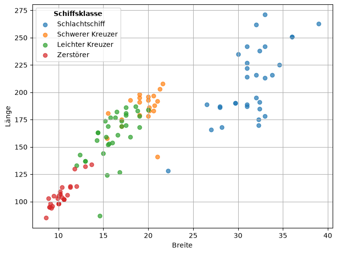
# PCA mit numpy
import numpy as np
features = ["DATUM","DRAENG","LANG","BREIT","TIEF","PANZ","PS","KNOTEN","RADIUS","MANN"]
X = data[features].to_numpy(dtype=float)
# Standardisierung (z-score): Xz = (X - mean) / std
mu = X.mean(axis=0)
sigma = X.std(axis=0, ddof=1)
Xz = (X - mu) / sigma
# Kovarianzmatrix (p x p)
C = np.cov(Xz, rowvar=False)
# Eigenzerlegung (C ist symmetrisch -> eigh)
eigvals, eigvecs = np.linalg.eigh(C)
# Absteigend sortieren
idx = np.argsort(eigvals)[::-1]
eigvals = eigvals[idx]
eigvecs = eigvecs[:, idx]
# Erklärte Varianzanteile
explained_ratio = eigvals / eigvals.sum()
cum_ratio = np.cumsum(explained_ratio)
print("Explained variance ratio:", explained_ratio[:5])
print("Cumulative:", cum_ratio[:5])
# Projektion auf k Komponenten
k = 2
Z = Xz @ eigvecs[:, :k] # (n x k)
print("Scores shape:", Z.shape)Explained variance ratio: [0.60385396 0.22634044 0.08422763 0.03589639 0.01538188]
Cumulative: [0.60385396 0.8301944 0.91442203 0.95031843 0.9657003 ]
Scores shape: (114, 2)# Loadings: Korrelation Feature <-> Komponente (bei standardisierten X oft ~ eigvecs * sqrt(eigval))
loadings = eigvecs[:, :k] * np.sqrt(eigvals[:k])
loading_df = pd.DataFrame(loadings, index=features, columns=[f"PC{i+1}" for i in range(k)])
print(loading_df.sort_values("PC1", key=np.abs, ascending=False).head(10)) PC1 PC2
BREIT 0.981728 -0.058167
DRAENG 0.947639 -0.011211
TIEF 0.945107 -0.214818
MANN 0.943035 0.139282
PANZ -0.929105 0.101395
LANG 0.887880 0.325441
KNOTEN -0.562947 0.778759
PS 0.503305 0.756756
RADIUS 0.393416 0.308099
DATUM -0.132741 0.896708class_labels = {
1: "Schlachtschiff",
3: "Schwerer Kreuzer",
4: "Leichter Kreuzer",
5: "Zerstörer"
}
df_scores = data.copy()
df_scores["PC1"] = Z[:, 0]
df_scores["PC2"] = Z[:, 1]
for art in sorted(df_scores["ART"].unique()):
subset = df_scores[df_scores["ART"] == art]
plt.scatter(
subset["PC1"],
subset["PC2"],
label=class_labels.get(art, str(art)),
alpha=0.7
)
plt.xlabel("PC1")
plt.ylabel("PC2") # <- vorher hattest du zweimal xlabel
plt.title("PCA der Kriegsschiffe")
plt.legend(title="Schiffsklasse", title_fontproperties={'weight': 'bold'})
plt.grid(True)
plt.axhline(0, color='black', linewidth=0.8)
plt.axvline(0, color='black', linewidth=0.8)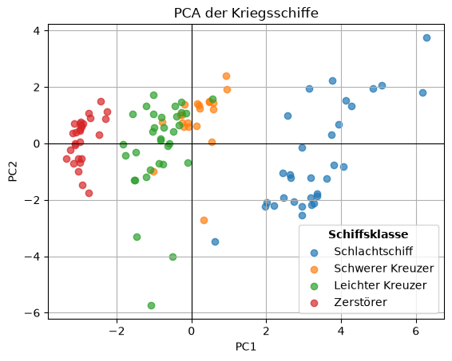
Jetzt mit Scikid Learn!
# PCA mit sklearn
from sklearn.preprocessing import StandardScaler
from sklearn.decomposition import PCA
scaler = StandardScaler()
Xz_sk = scaler.fit_transform(X)
pca = PCA(n_components=2, random_state=0)
Z_sk = pca.fit_transform(Xz_sk)
print("Explained variance ratio:", pca.explained_variance_ratio_)
print("Cumulative:", np.cumsum(pca.explained_variance_ratio_))
# Komponenten (Richtungsvektoren in Feature-Raum)
components = pca.components_ # shape: (k, p)
components_df = pd.DataFrame(components.T, index=features, columns=["PC1","PC2"])
print(components_df.sort_values("PC1", key=np.abs, ascending=False).head(10))Explained variance ratio: [0.60385396 0.22634044]
Cumulative: [0.60385396 0.8301944 ]
PC1 PC2
BREIT 0.399508 -0.038663
DRAENG 0.385636 -0.007452
TIEF 0.384605 -0.142788
MANN 0.383762 0.092579
PANZ -0.378093 0.067396
LANG 0.361317 0.216317
KNOTEN -0.229087 0.517633
PS 0.204817 0.503008
RADIUS 0.160098 0.204790
DATUM -0.054018 0.596033import matplotlib.pyplot as plt
import numpy as np
# Scores-DataFrame erstellen
df_scores = data.copy()
df_scores["PC1"] = Z_sk[:, 0]
df_scores["PC2"] = Z_sk[:, 1]
plt.figure(figsize=(10,8))
# ----- 1) Punkte (Schiffe) -----
class_labels = {
1: "Schlachtschiff",
3: "Schwerer Kreuzer",
4: "Leichter Kreuzer",
5: "Zerstörer"
}
colors = {
1: "red",
3: "blue",
4: "green",
5: "orange"
}
for art in sorted(df_scores["ART"].unique()):
subset = df_scores[df_scores["ART"] == art]
plt.scatter(
subset["PC1"],
subset["PC2"],
label=class_labels.get(art, str(art)),
color=colors.get(art, None),
alpha=0.6
)
# ----- 2) Variablen-Pfeile (Loadings) -----
# Skalierungsfaktor für bessere Sichtbarkeit
scale = 3
for i, feature in enumerate(features):
plt.arrow(
0, 0,
loadings[i, 0] * scale,
loadings[i, 1] * scale,
color="black",
alpha=0.8,
head_width=0.1
)
plt.text(
loadings[i, 0] * scale * 1.1,
loadings[i, 1] * scale * 1.1,
feature,
fontsize=10
)
# ----- Layout -----
plt.xlabel(f"PC1 ({explained_ratio[0]*100:.1f}%)")
plt.ylabel(f"PC2 ({explained_ratio[1]*100:.1f}%)")
plt.title("PCA Biplot – Kriegsschiffe")
plt.axhline(0, color='grey', linewidth=1)
plt.axvline(0, color='grey', linewidth=1)
plt.legend(title="Schiffsklasse", title_fontproperties={'weight': 'bold'})
plt.grid(True)
plt.show()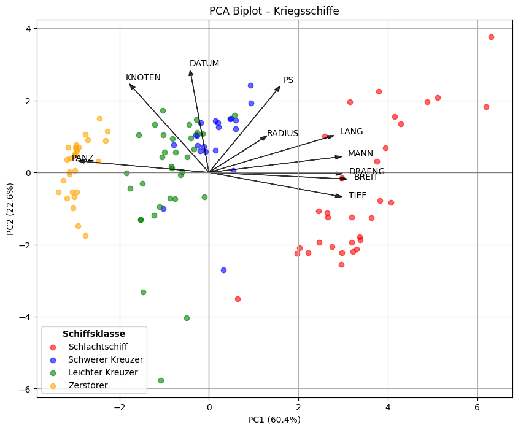
2.1.2 Beispiel 2: Iris Datensatz
import pandas as pd
import matplotlib.pyplot as plt
data = pd.read_csv('Daten/NichtUeberwachtesLernen/iris.csv', sep = ',')
mapping = {
"Iris-setosa": 1,
"Iris-versicolor": 2,
"Iris-virginica": 3
}
data["species_number"] = data["species"].apply(lambda x: mapping.get(x))
print (data.info())
<class 'pandas.DataFrame'>
RangeIndex: 150 entries, 0 to 149
Data columns (total 6 columns):
# Column Non-Null Count Dtype
--- ------ -------------- -----
0 sepal-length 150 non-null float64
1 sepal-width 150 non-null float64
2 petal-length 150 non-null float64
3 petal-width 150 non-null float64
4 species 150 non-null str
5 species_number 150 non-null int64
dtypes: float64(4), int64(1), str(1)
memory usage: 7.2 KB
None#PCA
from sklearn.preprocessing import StandardScaler
from sklearn.decomposition import PCA
features = ['sepal-length','sepal-width','petal-length','petal-width']
X = data[features].to_numpy(dtype=float)
# Optional: fehlende Werte entfernen (oder imputen)
mask = np.isfinite(X).all(axis=1)
X = X[mask]
df_clean = data.loc[mask].reset_index(drop=True)
print(X.shape, df_clean.shape)
scaler = StandardScaler()
Xz_sk = scaler.fit_transform(X)
pca = PCA(n_components=2, random_state=0)
Z_sk = pca.fit_transform(Xz_sk)
print("Explained variance ratio:", pca.explained_variance_ratio_)
print("Cumulative:", np.cumsum(pca.explained_variance_ratio_))
# Komponenten (Richtungsvektoren in Feature-Raum)
components = pca.components_ # shape: (k, p)
components_df = pd.DataFrame(components.T, index=features, columns=["PC1","PC2"])
print(components_df.sort_values("PC1", key=np.abs, ascending=False).head(10))(150, 4) (150, 6)
Explained variance ratio: [0.72770452 0.23030523]
Cumulative: [0.72770452 0.95800975]
PC1 PC2
petal-length 0.581254 0.021095
petal-width 0.565611 0.065416
sepal-length 0.522372 0.372318
sepal-width -0.263355 0.925556class_labels = {
1: "Iris-setosa",
3: "Iris-versicolor",
3: "Iris-virginica"
}
df_scores = df_clean.copy()
df_scores["PC1"] = Z_sk[:, 0]
df_scores["PC2"] = Z_sk[:, 1]
for art in sorted(df_scores["species"].unique()):
subset = df_scores[df_scores["species"] == art]
plt.scatter(
subset["PC1"],
subset["PC2"],
label=class_labels.get(art, str(art)),
alpha=0.7
)
plt.xlabel("PC1")
plt.ylabel("PC2") # <- vorher hattest du zweimal xlabel
plt.title("PCA Iris-Datensatz")
plt.legend(title="species", title_fontproperties={'weight': 'bold'})
plt.grid(True)
plt.axhline(0, color='black', linewidth=0.8)
plt.axvline(0, color='black', linewidth=0.8)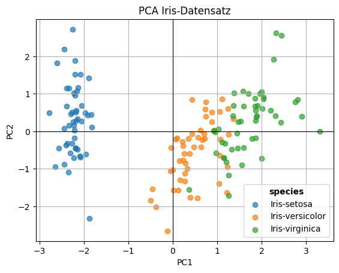
2.1.3 Beispiel 3: Pinguin-Datensatz
import numpy as np
import matplotlib.pyplot as plt
import sklearn as sk
import pandas as pd
from sklearn.preprocessing import StandardScaler
from sklearn.decomposition import PCA
data = pd.read_csv('Daten/NichtUeberwachtesLernen/penguins.csv', sep = ',')
mapping = {
"Adelie": 1,
"Gentoo": 2,
"Chinstrap": 3
}
mapping2 = {
"male": 1,
"female": 2
}
data["species_number"] = data["species"].apply(lambda x: mapping.get(x))
data['sex_number'] = data['sex'].apply(lambda x: mapping2.get(x))
print (data.info())
#PCA
features = ['bill_length_mm','bill_depth_mm','flipper_length_mm','body_mass_g']#,'sex_number','year']
X = data[features].to_numpy(dtype=float)
# Optional: fehlende Werte entfernen (oder imputen)
mask = np.isfinite(X).all(axis=1)
X = X[mask]
df_clean = data.loc[mask].reset_index(drop=True)
print(X.shape, df_clean.shape)
scaler = StandardScaler()
Xz_sk = scaler.fit_transform(X)
pca = PCA(n_components=2, random_state=0)
Z_sk = pca.fit_transform(Xz_sk)
print("Explained variance ratio:", pca.explained_variance_ratio_)
print("Cumulative:", np.cumsum(pca.explained_variance_ratio_))
# Komponenten (Richtungsvektoren in Feature-Raum)
components = pca.components_ # shape: (k, p)
components_df = pd.DataFrame(components.T, index=features, columns=["PC1","PC2"])
print(components_df.sort_values("PC1", key=np.abs, ascending=False).head(10))
class_labels = {
1: "Adelie",
2: "Gentoo",
3: "Chinstrap"
}
df_scores = df_clean.copy()
df_scores["PC1"] = Z_sk[:, 0]
df_scores["PC2"] = Z_sk[:, 1]
for art in sorted(df_scores["species"].unique()):
subset = df_scores[df_scores["species"] == art]
plt.scatter(
subset["PC1"],
subset["PC2"],
label=class_labels.get(art, str(art)),
alpha=0.7
)
plt.xlabel("PC1")
plt.ylabel("PC2") # <- vorher hattest du zweimal xlabel
plt.title("PCA Pinguin-Datensatz")
plt.legend(title="species", title_fontproperties={'weight': 'bold'})
plt.grid(True)
plt.axhline(0, color='black', linewidth=0.8)
plt.axvline(0, color='black', linewidth=0.8)
<class 'pandas.DataFrame'>
RangeIndex: 344 entries, 0 to 343
Data columns (total 11 columns):
# Column Non-Null Count Dtype
--- ------ -------------- -----
0 rowid 344 non-null int64
1 species 344 non-null str
2 island 344 non-null str
3 bill_length_mm 342 non-null float64
4 bill_depth_mm 342 non-null float64
5 flipper_length_mm 342 non-null float64
6 body_mass_g 342 non-null float64
7 sex 333 non-null str
8 year 344 non-null int64
9 species_number 344 non-null int64
10 sex_number 333 non-null float64
dtypes: float64(5), int64(3), str(3)
memory usage: 29.7 KB
None
(342, 4) (342, 11)
Explained variance ratio: [0.68843878 0.19312919]
Cumulative: [0.68843878 0.88156797]
PC1 PC2
flipper_length_mm 0.576013 0.002282
body_mass_g 0.548350 0.084363
bill_length_mm 0.455250 0.597031
bill_depth_mm -0.400335 0.797767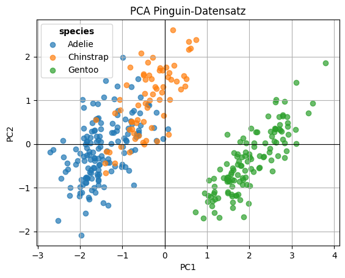
2.2 t-SNE
Bei t-SNE handelt es sich um einen Algorithmus, der auf die Visualisierung abzielt. Mit t-SNE wird eine neue Repräsentation der Daten berechnet, daher lässt sie sich nur auf die Trainingsdaten, nicht auf die Testdaten anwenden.
t-SNE (t-Distributed Stochastic Neighbor Embedding) ist ein Verfahren zur Dimensionsreduktion. Es wird häufig verwendet, um hochdimensionale Daten (z. B. mit vielen Features) in 2D oder 3D zu visualisieren.
t-SNE betrachtet, wie nah Datenpunkte im ursprünglichen hochdimensionalen Raum zueinander liegen. Daraus werden Wahrscheinlichkeiten für Nachbarschaften berechnet, wobei ähnliche Punkte zu einer hohen Wahrscheinlichkeit führen. Danach wird eine meist 2D Darstellung ermittelt, in der diese Nachbarschaften möglichst ähnlich erhalten bleiben. Mit Hilfe einer t-Verteilung werden dann weit entfernte Punkte zu stark zusammengezogen werden.
3 Clustering
3.1 kMeans
k-Means ist ein Clustering-Algorithmus, der Datenpunkte in k Gruppen (Cluster) einteilt, sodass Punkte innerhalb eines Clusters möglichst ähnlich sind. Dazu muss zu Beginn die \(k\) der zu findenden Cluster festgelegt werden.
Der Algorithmus startet mit k zufälligen Zentren (Centroids). Jeder Datenpunkt wird dem nächstgelegenen Zentrum zugeordnet. Die Zentren werden anschließend als Mittelwert aller Punkte im Cluster neu berechnet.
Dies wird solange wiederholt, bis sich die Zentren kaum noch ändern.
Die Daten werden also in k Cluster mit jeweils einem Mittelpunkt aufgeteilt, wobei die Abstände der Punkte zu ihren Zentren minimiert werden.
from sklearn.datasets import load_iris
from sklearn.model_selection import train_test_split
import numpy as np
import matplotlib.pyplot as plt
from matplotlib.colors import BoundaryNorm
import matplotlib.cm as cm
import matplotlib.lines as mlines
from sklearn.datasets import make_blobs
from sklearn.cluster import KMeans
iris = load_iris()
X,y = make_blobs(n_samples=300, centers=3, random_state=1)
plt.scatter(X[:,0], X[:,1], c = y)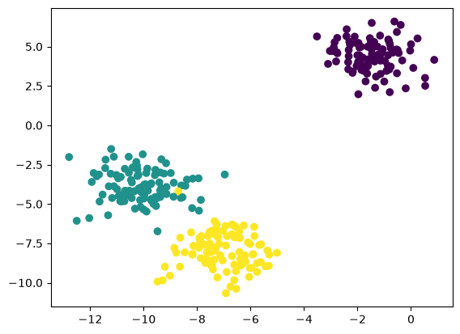
3.1.1 KMeans zu Fuss programmieren
import numpy as np
def kmeans_numpy(
X: np.ndarray,
k: int,
max_iter: int = 300,
tol: float = 1e-4,
random_state: int | None = None,
):
"""
Einfaches K-Means (Lloyd's Algorithm) nur mit NumPy.
Returns:
centroids: (k, n_features)
labels: (n_samples,)
inertia: Sum of squared distances to closest centroid
n_iter: Anzahl Iterationen
"""
X = np.asarray(X, dtype=float)
n_samples, n_features = X.shape
rng = np.random.default_rng(random_state)
# 1) Initialisierung: wähle k zufällige Punkte als Start-Zentren
init_idx = rng.choice(n_samples, size=k, replace=False)
centroids = X[init_idx].copy()
labels = np.full(n_samples, -1, dtype=int)
for it in range(1, max_iter + 1):
# 2) Assignment-Step: jedem Punkt nächstes Zentrum zuordnen
# Distanz^2: ||x - c||^2 = sum((X - C)^2) über Features
# Broadcasting: (n,1,f) - (1,k,f) -> (n,k,f) -> sum -> (n,k)
dists_sq = ((X[:, None, :] - centroids[None, :, :]) ** 2).sum(axis=2)
new_labels = np.argmin(dists_sq, axis=1)
# Falls sich Labels nicht ändern: fertig
if np.array_equal(new_labels, labels):
labels = new_labels
break
labels = new_labels
# 3) Update-Step: Zentren = Mittelwert der zugeordneten Punkte
new_centroids = centroids.copy()
for j in range(k):
mask = labels == j
if np.any(mask):
new_centroids[j] = X[mask].mean(axis=0)
else:
# Leerer Cluster: re-init auf einen zufälligen Punkt
new_centroids[j] = X[rng.integers(0, n_samples)]
# Konvergenz über Zentren-Bewegung
shift = np.linalg.norm(new_centroids - centroids)
centroids = new_centroids
if shift <= tol:
break
# Inertia (wie bei sklearn): Summe der quadrierten Abstände zum nächsten Zentrum
final_dists_sq = ((X - centroids[labels]) ** 2).sum(axis=1)
inertia = final_dists_sq.sum()
return centroids, labels, inertia, itX, y_true = make_blobs(n_samples=300, centers=3, random_state=1)
centroids, labels, inertia, n_iter = kmeans_numpy(X, k=3, random_state=42)
markers = ['o', 's', '^', 'x', 'D'] # verschiedene Marker
for i in np.unique(labels):
plt.scatter(
X[labels == i, 0],
X[labels == i, 1],
marker=markers[i],
label=f"Cluster {i}"
)
plt.scatter(centroids[:, 0], centroids[:, 1], marker="x", s=200)
#Inertia: Summe der quadrierten Abstände aller Punkte zu ihrem jeweiligen Cluster-Zentrum
#n_iter: Das ist die Anzahl der Iterationen, die K-Means gebraucht hat, bis es konvergiert ist.
plt.title(f"inertia={inertia:.2f}, iters={n_iter}") Text(0.5, 1.0, 'inertia=573.94, iters=5')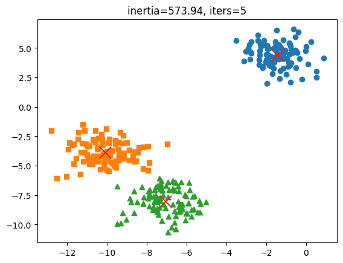
3.1.2 KMeans mit sklearn
Nutzt verbessertes KMeans: Statt alle Zentren zufällig zu wählen, werden sie strategisch verteilt
X, y = make_blobs(n_samples=300, centers=3, random_state=1)
# KMeans
kmeans = KMeans(n_clusters=3, random_state=42)
kmeans.fit(X)
feature_names = ['Merkmal 1', 'Merkmal 2']
klassennamen = ['Blob 1', 'Blob 2', 'Blob 3']
pred = kmeans.labels_
print(pred)[2 0 2 1 1 1 2 1 1 0 0 0 2 2 0 1 2 2 1 2 2 2 1 1 1 2 2 1 2 2 1 0 0 2 0 2 0
1 0 1 1 0 1 1 2 2 1 0 2 2 0 2 2 2 1 2 1 0 1 2 2 0 0 1 1 0 0 1 0 2 1 1 1 2
1 2 0 1 1 2 2 2 1 2 1 0 2 2 1 2 0 1 2 0 2 0 2 2 0 0 2 0 1 0 0 1 1 2 0 2 0
2 0 1 2 1 0 2 2 1 2 1 0 2 0 1 1 2 0 2 0 2 1 0 0 2 0 2 2 2 0 1 1 0 2 0 1 2
0 1 0 2 0 2 1 0 0 2 0 2 2 1 1 0 1 2 0 1 1 2 1 2 2 1 1 1 0 2 0 0 1 2 1 2 1
1 1 0 2 0 2 1 1 1 1 2 1 2 1 1 0 0 2 0 0 1 0 2 0 2 1 0 0 1 0 1 0 2 1 1 2 0
2 1 0 1 2 1 1 0 1 2 0 0 1 0 2 0 0 1 0 1 0 2 1 0 1 1 1 2 1 0 2 0 1 0 2 0 2
1 2 0 1 2 0 1 1 2 2 0 0 1 0 0 1 0 0 0 1 0 1 0 2 0 0 2 0 2 0 0 2 2 1 2 2 1
2 0 0 0]labels = kmeans.labels_
centroids = kmeans.cluster_centers_
cmap = plt.colormaps.get_cmap('viridis').resampled(3)
norm = BoundaryNorm(boundaries=[-0.5, 0.5, 1.5, 2.5], ncolors=3)
plt.figure(figsize=(6,5))
# --- Scatter ---
for cluster in np.unique(labels):
mask = labels == cluster
plt.scatter(
X[mask, 0],
X[mask, 1],
c=y[mask],
cmap=cmap, norm=norm,
marker=markers[cluster]
)
# --- Zentren ---
plt.scatter(
centroids[:, 0],
centroids[:, 1],
marker='x',
s=200,
linewidths=3,
color='black'
)
# =========================
# 1️⃣ Farblegende (echte Klassen)
# =========================
color_handles = []
for i, class_name in enumerate(klassennamen):
color = cmap(i)
handle = mlines.Line2D(
[], [],
color=color,
marker='o',
linestyle='None',
markersize=8,
label=class_name
)
color_handles.append(handle)
legend1 = plt.legend(
handles=color_handles,
title="True Class (Farbe)",
loc="upper left"
)
plt.gca().add_artist(legend1)
# =========================
# 2️⃣ Markerlegende (KMeans)
# =========================
marker_handles = []
for i in np.unique(labels):
handle = mlines.Line2D(
[], [],
color='black',
marker=markers[i],
linestyle='None',
markersize=8,
label=f"Cluster {i}"
)
marker_handles.append(handle)
plt.legend(
handles=marker_handles,
title="KMeans Cluster (Form)",
loc="lower right"
)
plt.title(f"inertia={kmeans.inertia_:.2f}, iters={kmeans.n_iter_}")
plt.xlabel(feature_names[0])
plt.ylabel(feature_names[1])
plt.tight_layout()
plt.show()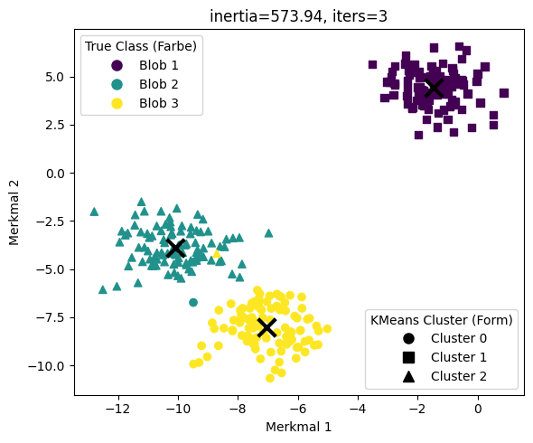
3.1.3 Clusteranalyse mit Iris Dataset
from sklearn.cluster import KMeans
X, y, feature_names = iris.data, iris.target, iris.feature_names
plt.scatter(X[:,0], X[:,3], c = y)
plt.xlabel(str(feature_names[0]))
plt.ylabel(str(feature_names[3]))
plt.title('Iris-Daten')Text(0.5, 1.0, 'Iris-Daten')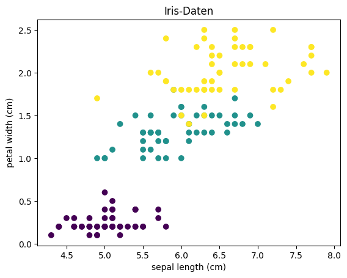
# KMeans
kmeans = KMeans(n_clusters=3, random_state=42)
kmeans.fit(X)
print(kmeans.predict(X))[1 1 1 1 1 1 1 1 1 1 1 1 1 1 1 1 1 1 1 1 1 1 1 1 1 1 1 1 1 1 1 1 1 1 1 1 1
1 1 1 1 1 1 1 1 1 1 1 1 1 0 2 0 2 2 2 2 2 2 2 2 2 2 2 2 2 2 2 2 2 2 2 2 2
2 2 2 0 2 2 2 2 2 2 2 2 2 2 2 2 2 2 2 2 2 2 2 2 2 2 0 2 0 0 0 0 2 0 0 0 0
0 0 2 2 0 0 0 0 2 0 2 0 2 0 0 2 2 0 0 0 0 0 2 0 0 0 0 2 0 0 0 2 0 0 0 2 0
0 2]labels = kmeans.labels_
print('Labels:', labels)
centroids = kmeans.cluster_centers_
print('Centroids:', centroids)
import matplotlib.lines as mlines
cmap = plt.colormaps.get_cmap('viridis').resampled(3)
norm = BoundaryNorm(boundaries=[-0.5, 0.5, 1.5, 2.5], ncolors=3)
plt.figure(figsize=(6,5))
# --- Scatter ---
for cluster in np.unique(labels):
mask = labels == cluster
plt.scatter(
X[mask, 0],
X[mask, 3],
c=y[mask],
cmap=cmap, norm=norm,
marker=markers[cluster]
)
# --- Zentren ---
plt.scatter(
centroids[:, 0],
centroids[:, 3],
marker='x',
s=200,
linewidths=3,
color='black'
)
# =========================
# 1️⃣ Farblegende (echte Klassen)
# =========================
color_handles = []
for i, class_name in enumerate(iris.target_names):
color = cmap(i)
handle = mlines.Line2D(
[], [],
color=color,
marker='o',
linestyle='None',
markersize=8,
label=class_name
)
color_handles.append(handle)
legend1 = plt.legend(
handles=color_handles,
title="Klassenlabel (Farbe)",
loc="upper left"
)
plt.gca().add_artist(legend1)
# =========================
# 2️⃣ Markerlegende (KMeans)
# =========================
marker_handles = []
for i in np.unique(labels):
handle = mlines.Line2D(
[], [],
color='black',
marker=markers[i],
linestyle='None',
markersize=8,
label=f"Cluster {i}"
)
marker_handles.append(handle)
plt.legend(
handles=marker_handles,
title="KMeans Cluster Zuordnung (Form)",
loc="lower right"
)
plt.title(f"inertia={kmeans.inertia_:.2f}, iters={kmeans.n_iter_}")
plt.xlabel(feature_names[0])
plt.ylabel(feature_names[3])Labels: [1 1 1 1 1 1 1 1 1 1 1 1 1 1 1 1 1 1 1 1 1 1 1 1 1 1 1 1 1 1 1 1 1 1 1 1 1
1 1 1 1 1 1 1 1 1 1 1 1 1 0 2 0 2 2 2 2 2 2 2 2 2 2 2 2 2 2 2 2 2 2 2 2 2
2 2 2 0 2 2 2 2 2 2 2 2 2 2 2 2 2 2 2 2 2 2 2 2 2 2 0 2 0 0 0 0 2 0 0 0 0
0 0 2 2 0 0 0 0 2 0 2 0 2 0 0 2 2 0 0 0 0 0 2 0 0 0 0 2 0 0 0 2 0 0 0 2 0
0 2]
Centroids: [[6.85384615 3.07692308 5.71538462 2.05384615]
[5.006 3.428 1.462 0.246 ]
[5.88360656 2.74098361 4.38852459 1.43442623]]Text(0, 0.5, 'petal width (cm)')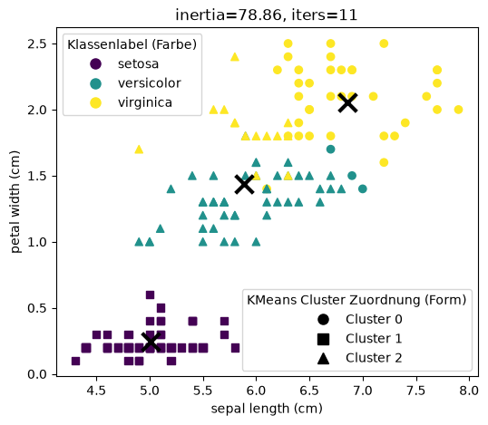
3.2 DBSCAN
kmeans ist ein gutes Clustering-Tool, aber k-Means kann nur zentrierte Cluster finden, weil der Algorithmus jedes Cluster ausschließlich durch einen Mittelpunkt beschreibt und Punkte anhand ihres Abstands zu diesem Mittelpunkt zuordnet.
Eine Alternative ist DBSCAN (density-based spacial clustering of applications with noise). DBSCAN ist ein Clustering-Algorithmus, der Gruppen von Datenpunkten anhand ihrer Dichte findet. Der Clusterparameter ist die Mindestanzahl an Punkten pmin, die ein Cluster haben muss.
Für jeden Punkt wird geprüft, wie viele andere Punkte sich in einem Radius befinden. Hat ein Punkt mindestens pmin Nachbarn, wird er als Kernpunkt betrachtet. Von Kernpunkten aus werden benachbarte Punkte zu einem Cluster verbunden. Punkte, die zu keinem dichten Bereich gehören, werden als Rauschen (Noise) markiert.
Damit entstehen Cluster dort, wo viele Punkte dicht beieinander liegen. DBSCAN kann auch Cluster mit beliebiger Form finden und benötigt keine vorher festgelegte Clusterzahl.
DBSCAN funktioniert schlecht wenn Cluster unterschiedliche Punktdichten haben. Auch ist die Wahl von eps oft nicht trivial. Für sehr große Datenmengen kann die Nachbarschaftssuche relativ rechenintensiv werden.
from sklearn.cluster import DBSCAN
from sklearn.datasets import make_moons
import mglearn
X,y = make_moons(n_samples = 2000, noise = 0.05, random_state = 0)
scaler = StandardScaler()
scaler.fit(X)
X_scaled = scaler.transform(X)
# KMeans
kmeans = KMeans(n_clusters=2, random_state=42)
k_clusters = kmeans.fit_predict(X_scaled)
# DBSCAN
dbscan = DBSCAN(eps=0.2, min_samples=5)
db_clusters = dbscan.fit_predict(X)
fig, [ax1,ax2] = plt.subplots(1,2)
fig.set_figheight(5)
fig.set_figwidth(15)
ax1.scatter(X_scaled[:,0], X_scaled[:,1], c = k_clusters, cmap = mglearn.cm2)
ax1.set_title('Clusterbildung mit kmeans')
ax1.set_xlabel('Merkmal 1')
ax1.set_ylabel('Merkmal 2')
ax2.scatter(X_scaled[:,0], X_scaled[:,1], c = db_clusters, cmap = mglearn.cm2)
ax2.set_title('Clusterbildung mit dbscan')
ax2.set_xlabel('Merkmal 1')
ax2.set_ylabel('Merkmal 2')Text(0, 0.5, 'Merkmal 2')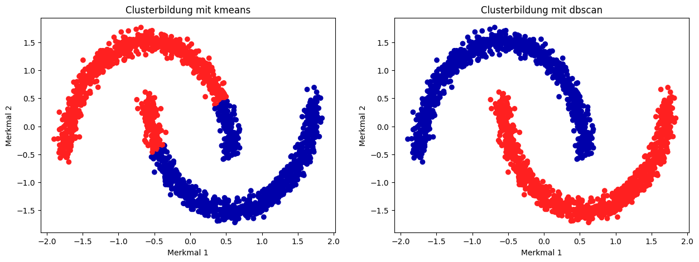
4 Beispiel: Zahlen erkennen
4.1 Schritt 1: Zahlen einlesen
from glob import glob
import numpy as np
import cv2
import matplotlib.pyplot as plt
from sklearn.decomposition import PCA
liste_daten = glob('Daten/NichtUeberwachtesLernen/Zahlen/Zahlen_Handschrift_sortiert*.png')
for i in liste_daten:
print(i)Daten/NichtUeberwachtesLernen/Zahlen/Zahlen_Handschrift_sortiert09.png
Daten/NichtUeberwachtesLernen/Zahlen/Zahlen_Handschrift_sortiert08.png
Daten/NichtUeberwachtesLernen/Zahlen/Zahlen_Handschrift_sortiert06.png
Daten/NichtUeberwachtesLernen/Zahlen/Zahlen_Handschrift_sortiert12.png
Daten/NichtUeberwachtesLernen/Zahlen/Zahlen_Handschrift_sortiert13.png
Daten/NichtUeberwachtesLernen/Zahlen/Zahlen_Handschrift_sortiert07.png
Daten/NichtUeberwachtesLernen/Zahlen/Zahlen_Handschrift_sortiert11.png
Daten/NichtUeberwachtesLernen/Zahlen/Zahlen_Handschrift_sortiert05.png
Daten/NichtUeberwachtesLernen/Zahlen/Zahlen_Handschrift_sortiert04.png
Daten/NichtUeberwachtesLernen/Zahlen/Zahlen_Handschrift_sortiert10.png
Daten/NichtUeberwachtesLernen/Zahlen/Zahlen_Handschrift_sortiert14.png
Daten/NichtUeberwachtesLernen/Zahlen/Zahlen_Handschrift_sortiert01.png
Daten/NichtUeberwachtesLernen/Zahlen/Zahlen_Handschrift_sortiert03.png
Daten/NichtUeberwachtesLernen/Zahlen/Zahlen_Handschrift_sortiert02.pngdef imshow(name, img, size=8):
import matplotlib.pyplot as plt
from IPython.display import display
import cv2
# Convert BGR to RGB
if len(img.shape) == 3 and img.shape[2] == 3:
img = cv2.cvtColor(img, cv2.COLOR_BGR2RGB)
h, w = img.shape[:2]
aspect = w / h
plt.figure(figsize=(size * aspect, size))
plt.imshow(img, cmap='gray' if len(img.shape) == 2 else None)
plt.title(name)
plt.axis('off')
# contours are not sorted, so sort them to assign the correct labels later
def sort_contours_grid(contours, row_height=50):
# Extract bounding boxes
bounding_boxes = [cv2.boundingRect(c) for c in contours]
# Combine contours with their boxes
contours_with_boxes = list(zip(contours, bounding_boxes))
# First sort top-to-bottom by y
contours_with_boxes.sort(key=lambda b: b[1][1]) # b[1][1] = y
# Group contours into rows based on y
rows = []
current_row = []
last_y = -row_height
for c, (x, y, w, h) in contours_with_boxes:
if y - last_y > row_height:
if current_row:
rows.append(current_row)
current_row = [(c, (x, y, w, h))]
last_y = y
else:
current_row.append((c, (x, y, w, h)))
if current_row:
rows.append(current_row)
# Now sort each row left to right
sorted_contours = []
for row in rows:
row.sort(key=lambda b: b[1][0]) # sort by x
sorted_contours.extend([c for c, _ in row])
return sorted_contours
contour_height = 23
x_data_list = []
response_list = []
for im in liste_daten:
print(im)
image = cv2.imread(im)
gray = cv2.cvtColor(image,cv2.COLOR_BGR2GRAY)
blur = cv2.GaussianBlur(gray,(5,5),0)
thresh = cv2.adaptiveThreshold(blur,255,1,1,11,2)
# find digits in image and create contours
contours, hierarchy = cv2.findContours(thresh, cv2.RETR_EXTERNAL, cv2.CHAIN_APPROX_SIMPLE)
no_digits = 0
#Sortieren der Konturen von oben nach unten und links nach rechts
contours = sort_contours_grid(contours)
for cnt in contours:
# print(cv2.contourArea(cnt))
if cv2.contourArea(cnt) > 50:
x, y, w, h = cv2.boundingRect(cnt)
if h > contour_height:
roi = thresh[y:y+h, x:x+w]
roismall = cv2.resize(roi, (28, 28))
x_data_list.append(roismall)
no_digits +=1
# now generate labels
print(no_digits, no_digits/10)
# create list of labels
list_of_digits = [0,1,2,3,4,5,6,7,8,9]
for element in range(int(no_digits/10)):
response_list.append(list_of_digits)
#finalize the data
x_data = np.array(x_data_list)
response = np.array(response_list)
y_data = response.flatten()
print(x_data.shape)
print(y_data.shape)Daten/NichtUeberwachtesLernen/Zahlen/Zahlen_Handschrift_sortiert09.png
220 22.0
Daten/NichtUeberwachtesLernen/Zahlen/Zahlen_Handschrift_sortiert08.png
210 21.0
Daten/NichtUeberwachtesLernen/Zahlen/Zahlen_Handschrift_sortiert06.png
220 22.0
Daten/NichtUeberwachtesLernen/Zahlen/Zahlen_Handschrift_sortiert12.png
220 22.0
Daten/NichtUeberwachtesLernen/Zahlen/Zahlen_Handschrift_sortiert13.png
220 22.0
Daten/NichtUeberwachtesLernen/Zahlen/Zahlen_Handschrift_sortiert07.png
220 22.0
Daten/NichtUeberwachtesLernen/Zahlen/Zahlen_Handschrift_sortiert11.png
210 21.0
Daten/NichtUeberwachtesLernen/Zahlen/Zahlen_Handschrift_sortiert05.png
220 22.0
Daten/NichtUeberwachtesLernen/Zahlen/Zahlen_Handschrift_sortiert04.png
220 22.0
Daten/NichtUeberwachtesLernen/Zahlen/Zahlen_Handschrift_sortiert10.png
220 22.0
Daten/NichtUeberwachtesLernen/Zahlen/Zahlen_Handschrift_sortiert14.png
210 21.0
Daten/NichtUeberwachtesLernen/Zahlen/Zahlen_Handschrift_sortiert01.png
220 22.0
Daten/NichtUeberwachtesLernen/Zahlen/Zahlen_Handschrift_sortiert03.png
210 21.0
Daten/NichtUeberwachtesLernen/Zahlen/Zahlen_Handschrift_sortiert02.png
220 22.0
(3040, 28, 28)
(3040,)# Hauptkomponentenanalyse
# Daten auf Form bringen, die pca erwartet
X = x_data.reshape(len(x_data), -1).astype(np.float32)
pca = PCA(n_components=2)
pca.fit(X)
X_2d = pca.transform(X)
print(X_2d)
print(y_data)[[1232.7958 797.4964 ]
[-867.12244 -524.8106 ]
[-130.98688 695.2475 ]
...
[-848.94946 182.80103]
[ 399.54236 -195.59573]
[ 182.1261 -634.99243]]
[0 1 2 ... 7 8 9]print(X_2d.shape)
print(y_data.shape)
plt.scatter(X_2d[:,0], X_2d[:,1], c=y_data, cmap="tab10", s=5)
for digit in range(10):
idx = y_data == digit
x_mean = X_2d[idx,0].mean()
y_mean = X_2d[idx,1].mean()
plt.text(x_mean, y_mean, str(digit), fontsize=16, weight='bold')
plt.show()(3040, 2)
(3040,)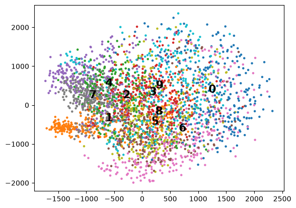
import numpy as np
import matplotlib.pyplot as plt
import matplotlib.patches as mpatches
from sklearn.manifold import TSNE
from sklearn.cluster import KMeans
# X: (n_samples, n_features) z.B. (n,784)
# y_data: (n,) mit Labels 0..9
# 1) t-SNE auf 2D
tsne = TSNE(random_state=42)
digits_tsne = tsne.fit_transform(X) # (n,2)
# 2) KMeans auf den 2D t-SNE Punkten
k = 12
kmeans = KMeans(n_clusters=k, random_state=0, n_init="auto")
cluster_id = kmeans.fit_predict(digits_tsne)
centers = kmeans.cluster_centers_
# 3) Cluster -> Ziffer (Mehrheitsvotum)
cluster_to_digit = {}
for c in range(k):
labels = y_data[cluster_id == c]
cluster_to_digit[c] = "?" if len(labels) == 0 else int(np.bincount(labels).argmax())
# 4) Plot
plt.figure(figsize=(8, 8))
# Punkte: Farbe = echtes Label
plt.scatter(digits_tsne[:,0], digits_tsne[:,1], c=y_data, cmap="tab10", s=5)
# Clusterzentren
plt.scatter(centers[:,0], centers[:,1], c="black", s=120, marker="x")
# Text im Zentrum
for c in range(k):
plt.text(
centers[c,0], centers[c,1], str(cluster_to_digit[c]),
fontsize=18, weight="bold",
ha="center", va="center",
bbox=dict(facecolor="white", alpha=0.7, edgecolor="none")
)
# Legende (0..9 Farben)
cmap = plt.cm.get_cmap("tab10")
legend_handles = [mpatches.Patch(color=cmap(i), label=str(i)) for i in range(10)]
plt.legend(handles=legend_handles, title="Digit")
plt.title(f"KMeans-Cluster (t-SNE) + Mehrheitslabel (k={k})")
plt.show()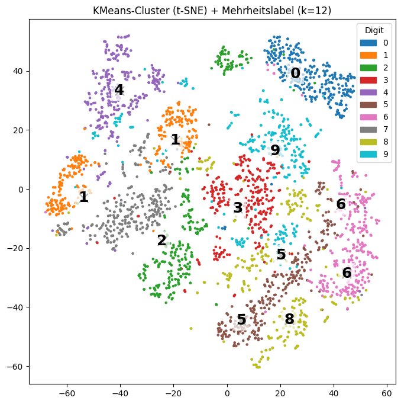
5 Autoencoder
Ein Autoencoder ist ein neuronales Netzwerk, das Daten komprimiert (Encoder) und wieder rekonstruiert (Decoder). Da es nicht perfekt kopieren darf, lernt es automatisch wichtige Merkmale der Daten zu erkennen.
Ein Autoencoder besteht aus zwei Komponenten, eine Encoder und einem Decoder
\[x \longrightarrow f(x) \longrightarrow h \longrightarrow g(h) \longrightarrow r\]
Autoenoder sind feed-forward Netze.
5.1 undercomplete Autoencoders
Bei den undercomplete Autoencodern ist der Encoder
\[x \longrightarrow f(x) \longrightarrow h\]
und der Decoder
\[h \longrightarrow g(h) \longrightarrow r\]
Dabei ist
\[dim(x) = dim(r)\]
und
\[dim(h) < dim(x)\]
Der Autoencoder lernt dadurch, die Daten durch die wichtigsten Eigenschaften zu repräsentieren. Haben Encoder und Decoder lineare Aktivierungsfunktionen, ist das Ergebnis das gleiche, wie bei einer PCA.
Aber die Aktivierungsfunktionen können natürlich auch nichtlinear sein.
Die Lossfunktion, die minimiert wird ist
\[ L( \mathbf{x}, g(f(\mathbf{x}))) = \sum_i \left( x_i - g(f(x_i)) \right)^2 \]
from tensorflow.keras.datasets import fashion_mnist
(x_train, _), (x_test, _) = fashion_mnist.load_data()
x_train = x_train.astype('float32') / 255.
x_test = x_test.astype('float32') / 255.
print (x_train.shape)
print (x_test.shape)(60000, 28, 28)
(10000, 28, 28)x_train = x_train.reshape(-1, 784)
x_test = x_test.reshape(-1, 784)import numpy as np
input_dim = 784
latent_dim = 64
# Wähle zum Start zufällige kleine Gewichte
# b ist Bias
W1 = np.random.randn(input_dim, latent_dim) * 0.01
b1 = np.zeros((1, latent_dim))
W2 = np.random.randn(latent_dim, input_dim) * 0.01
b2 = np.zeros((1, input_dim))def relu(x):
return np.maximum(0, x)
def relu_deriv(x):
return (x > 0).astype(float)
def sigmoid(x):
return 1 / (1 + np.exp(-x))
def sigmoid_deriv(x):
s = sigmoid(x)
return s * (1 - s)def forward(x):
z1 = x @ W1 + b1
h = relu(z1)
z2 = h @ W2 + b2
r = sigmoid(z2)
cache = (x, z1, h, z2, r)
return r, cache#Loss-Funktion
def mse_loss(x, r):
return np.mean((x - r) ** 2)def backward(cache):
global W1, b1, W2, b2
x, z1, h, z2, r = cache
# m = Anzahl der Trainingsbeispiele im Batch
m = x.shape[0]
# dL/dr
dr = (r - x) * 2 / m
# Decoder
dz2 = dr * sigmoid_deriv(z2)
dW2 = h.T @ dz2
db2 = np.sum(dz2, axis=0, keepdims=True)
# Encoder
dh = dz2 @ W2.T
dz1 = dh * relu_deriv(z1)
dW1 = x.T @ dz1
db1 = np.sum(dz1, axis=0, keepdims=True)
return dW1, db1, dW2, db2lr = 0.001
epochs = 10
batch_size = 256
for epoch in range(epochs):
perm = np.random.permutation(x_train.shape[0])
x_train_shuffled = x_train[perm]
for i in range(0, x_train.shape[0], batch_size):
x_batch = x_train_shuffled[i:i+batch_size]
# Forward
r, cache = forward(x_batch)
# Loss
loss = mse_loss(x_batch, r)
# Backward
dW1, db1, dW2, db2 = backward(cache)
# Update
W1 -= lr * dW1
b1 -= lr * db1
W2 -= lr * dW2
b2 -= lr * db2
print(f"Epoch {epoch+1}, Loss: {loss:.4f}")Epoch 1, Loss: 0.0939
Epoch 2, Loss: 0.0913
Epoch 3, Loss: 0.0771
Epoch 4, Loss: 0.0650
Epoch 5, Loss: 0.0583
Epoch 6, Loss: 0.0640
Epoch 7, Loss: 0.0567
Epoch 8, Loss: 0.0515
Epoch 9, Loss: 0.0580
Epoch 10, Loss: 0.0490import matplotlib.pyplot as plt
# einige Testbilder auswählen
n = 10
x_sample = x_test[:n]
# Rekonstruktionen berechnen
reconstructions, _ = forward(x_sample)
# Plot
plt.figure(figsize=(20, 4))
for i in range(n):
# Original
ax = plt.subplot(2, n, i + 1)
plt.imshow(x_sample[i].reshape(28, 28), cmap="gray")
plt.title("Original")
plt.axis("off")
# Rekonstruktion
ax = plt.subplot(2, n, i + 1 + n)
plt.imshow(reconstructions[i].reshape(28, 28), cmap="gray")
plt.title("Rek.")
plt.axis("off")
plt.tight_layout()
plt.show()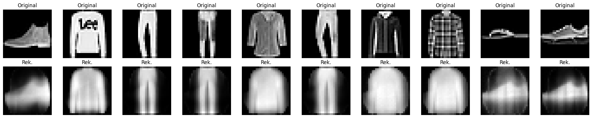
5.1.1 Aufgabe 1
Verwenden Sie lineare Aktivierungsfunktionen und vergleichen Sie das Ergebnis mit dem einer PCA
5.1.2 Aufgabe 2
Variieren Sie die Dimension von h und vergleichen Sie die Ergebnisse
from tensorflow.keras.models import Model
import tensorflow as tf
from tensorflow.keras import layers, losses
(x_train, _), (x_test, _) = fashion_mnist.load_data()
x_train = x_train.astype('float32') / 255.
x_test = x_test.astype('float32') / 255.
print (x_train.shape)
print (x_test.shape)
class Autoencoder(Model):
def __init__(self, latent_dim, shape):
super(Autoencoder, self).__init__()
self.latent_dim = latent_dim
self.shape = shape
self.encoder = tf.keras.Sequential([
layers.Flatten(),
layers.Dense(latent_dim, activation='relu'),
])
self.decoder = tf.keras.Sequential([
layers.Dense(int(np.prod(shape)), activation='sigmoid'),
layers.Reshape(shape)
])
def call(self, x):
encoded = self.encoder(x)
decoded = self.decoder(encoded)
return decoded
shape = x_test.shape[1:]
latent_dim = 64
autoencoder = Autoencoder(latent_dim, shape)
autoencoder.compile(optimizer='adam', loss=losses.MeanSquaredError())
autoencoder.fit(x_train, x_train,
epochs=10,
shuffle=True,
validation_data=(x_test, x_test))(60000, 28, 28) (10000, 28, 28) Epoch 1/10 1875/1875 ━━━━━━━━━━━━━━━━━━━━ 2s 810us/step - loss: 0.0240 - val_loss: 0.0133 Epoch 2/10 1875/1875 ━━━━━━━━━━━━━━━━━━━━ 1s 753us/step - loss: 0.0117 - val_loss: 0.0107 Epoch 3/10 1875/1875 ━━━━━━━━━━━━━━━━━━━━ 1s 753us/step - loss: 0.0101 - val_loss: 0.0099 Epoch 4/10 1875/1875 ━━━━━━━━━━━━━━━━━━━━ 1s 750us/step - loss: 0.0095 - val_loss: 0.0095 Epoch 5/10 1875/1875 ━━━━━━━━━━━━━━━━━━━━ 1s 747us/step - loss: 0.0092 - val_loss: 0.0092 Epoch 6/10 1875/1875 ━━━━━━━━━━━━━━━━━━━━ 1s 752us/step - loss: 0.0090 - val_loss: 0.0091 Epoch 7/10 1875/1875 ━━━━━━━━━━━━━━━━━━━━ 1s 747us/step - loss: 0.0089 - val_loss: 0.0090 Epoch 8/10 1875/1875 ━━━━━━━━━━━━━━━━━━━━ 1s 742us/step - loss: 0.0089 - val_loss: 0.0091 Epoch 9/10 1875/1875 ━━━━━━━━━━━━━━━━━━━━ 1s 742us/step - loss: 0.0088 - val_loss: 0.0089 Epoch 10/10 1875/1875 ━━━━━━━━━━━━━━━━━━━━ 1s 754us/step - loss: 0.0088 - val_loss: 0.0089
<keras.src.callbacks.history.History at 0x13001a120>encoded_imgs = autoencoder.encoder(x_test).numpy()
decoded_imgs = autoencoder.decoder(encoded_imgs).numpy()
n = 10
plt.figure(figsize=(20, 4))
for i in range(n):
# display original
ax = plt.subplot(2, n, i + 1)
plt.imshow(x_test[i])
plt.title("original")
plt.gray()
ax.get_xaxis().set_visible(False)
ax.get_yaxis().set_visible(False)
# display reconstruction
ax = plt.subplot(2, n, i + 1 + n)
plt.imshow(decoded_imgs[i])
plt.title("reconstructed")
plt.gray()
ax.get_xaxis().set_visible(False)
ax.get_yaxis().set_visible(False)
plt.show()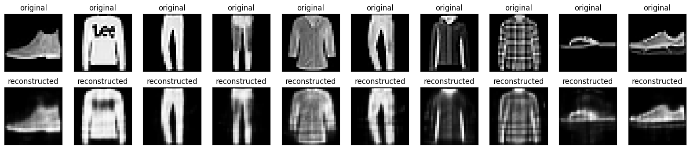
5.1.3 Aufgabe 3
Warum liefert die Variante mit Keras bessere Ergebnisse?
5.1.4 Aufgabe 4
Schreiben Sie einen undercomplete Autoencoder, der die Zahlen codiert und decodiert
5.1.5 Aufgabe 5
Was könnte man noch verbessern?
5.1.6 Aufgabe 6
Schreiben Sie einen Autoencoder der die Ziffern von 0-0 rekonstruieren kann!
5.1.7 Aufgabe 7
Verwenden Sie folgenden Testdatensatz. Können Sie die Zeichen identifizieren, die keine Ziffern sind?
{kind=link}